General
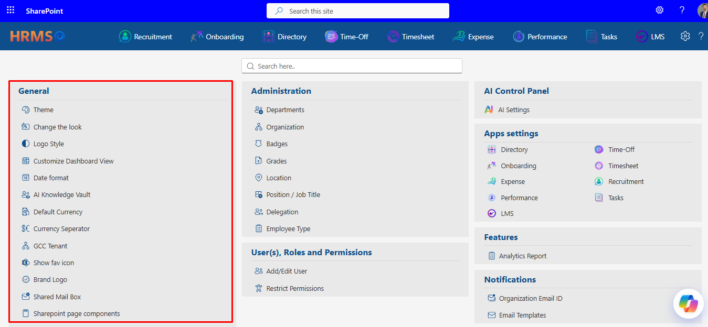
Theme
Dark, light, or “whatever SharePoint is doing.”
Theme controls the color scheme of the HR365-HRMS shell — three radio options: Dark mode, Light mode, or Site theme (matches your SharePoint site's own theme). The change is instant: check a box, and the whole app repaints itself immediately, no Save button required.The Theme dialog — three mutually exclusive options, applied the moment you click one.
- Site theme is the sensible default for most tenants — it keeps HR365-HRMS visually consistent with the rest of your SharePoint environment rather than introducing a second, competing color scheme.
- Dark / Light mode override the site theme outright, useful if your organization's SharePoint theme is hard to read inside the HR365-HRMS shell specifically.
Change the Look
A single accent color, chosen from a curated palette.
Change the Look is a dropdown of named presets — Mint Blossom and similar — that recolors accents throughout the app (buttons, highlights, active-state icons) without touching layout. Pick a name, click Save, and the accent color updates across HR365-HRMS immediately.
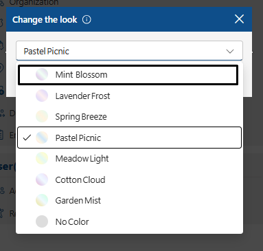
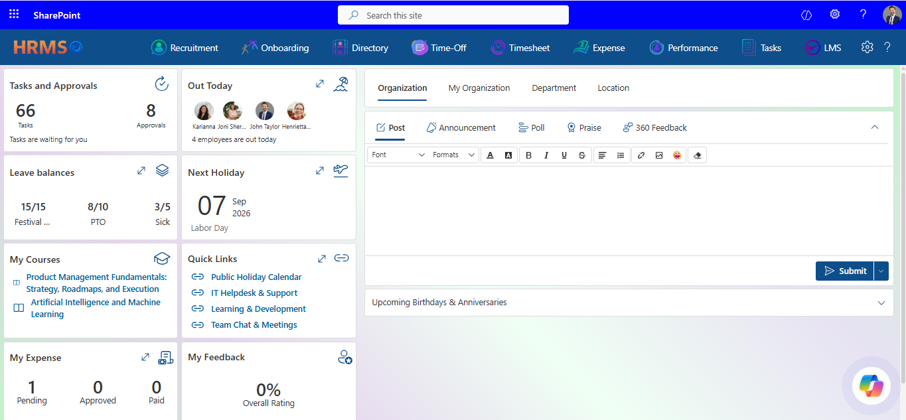
Change the Look — a dropdown of preset accent colors, applied on Save.
- Unlike Theme, this one does require Save — the dropdown selection is just a draft until you click it.
- There's no live preview swatch next to each option in the dropdown itself, so the name (“Mint Blossom”) is your only clue before committing — worth trying if you want to see the actual color before rolling it out tenant-wide.
- Use White if your Brand Logo or header background is dark enough that the coloured version disappears or loses contrast.
Logo Style
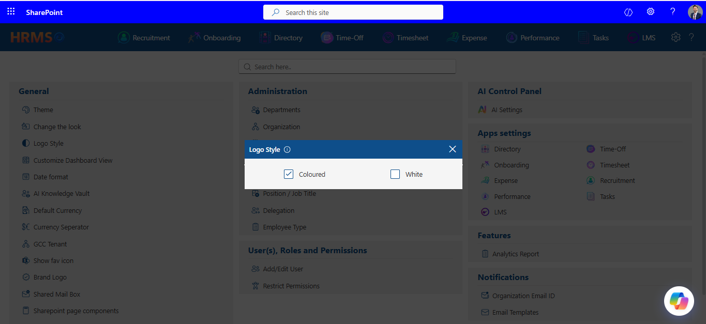
Coloured or white — for whichever background your Brand Logo sits on.
A simple two-option checkbox pair — Coloured or White — that controls how the app renders your logo mark (separately from the actual logo image, which is configured under Brand Logo further down this list).
- Set as default is mutually exclusive across views — flip it on for one view and it automatically comes off any other view that had it, exactly as you'd expect.
- Watch your naming. The system does not check for duplicate view names — see the QA bug report (BUG-07) for a case where two views with an identical name were created with zero warning. Give each view a name that's unambiguous at a glance in the picker.
- Confirmed working end-to-end during testing: switching formats here changed how dates rendered on the Time-Off calendar, which is exactly the cross-app consistency this setting promises.
- Follow the recommended dimensions closely. The 150×60px guidance with a transparent or white background is there because the logo slot is a fixed, narrow strip in the header — an image with a busy or colored background, or a very different aspect ratio, will likely look cropped or squeezed rather than simply resized.
- Enable Full Page View is the master switch for the clean, chrome-free look most tenants want; the other eight toggles fine-tune exactly which individual SharePoint elements stay hidden.
- Mind the hidden link between two of these toggles: turning “Hide top site header” off also turns “Enable Full Page View” off automatically, with no warning message explaining why. Turning “Hide top site header” back on does not restore Full Page View for you — you'll need to re-enable it yourself. If you're experimenting here, check the state of Enable Full Page View before you leave the panel, not just the toggle you meant to change.
- Treat this as a break-glass setting, not a routine toggle. Because switching it off immediately narrows access to only the explicitly-added user list, it's worth confirming that list is complete and current *before* flipping this off — not after.
- Renaming propagates everywhere immediately: changing a display label here updates both the top navigation bar and the Apps settings tile on the main Settings screen the moment you save — there's no separate step or delay.
- Turning a module Off removes it cleanly from the top nav, the overflow (“⋯”) menu, and the Apps settings tiles all at once — it doesn't linger anywhere half-hidden.
- Drag-to-reorder needs a confident drag, not a nudge. Short drags to an immediately adjacent row don't always register — if a reorder doesn't seem to take, try dragging further than feels necessary rather than assuming the feature isn't working.
- Managers-on, Users-off is a sensible starting posture for most organizations — it keeps company-wide messaging with people who manage teams, while individual contributors stay scoped to their own department's feed.
- Both tooltips are clear and specific here (“Allow Managers/Users to Create Announcements and Polls across Department”) — a good model for what the tooltip on every General setting should read like.
- Worth turning on in any tenant where update validation is someone's actual job rather than an occasional glance at the admin screen — it's the only setting in this section that proactively reaches out instead of waiting to be checked.
Customize Dashboard View
Build your own landing-page layout, card by card.
This is the most involved setting in the General column — a full-screen builder for creating named dashboard views: a title, a column count (2 or 3), a Rivo-panel alignment (Sticky or Floating), an optional “Set as default” flag, and a card picker to populate the layout. Existing views list in a simple grid with Edit and Delete actions.
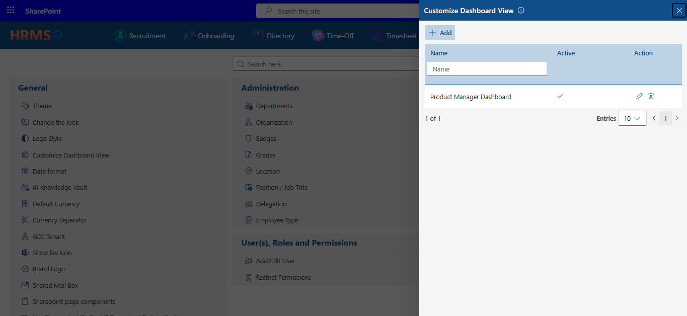
The Customize Dashboard View list — Edit, Delete, and Add are all available per view.
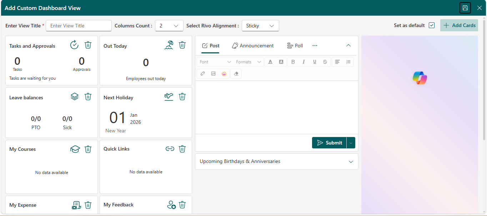
Date Format
One format, applied everywhere — no per-app overrides.A single dropdown (e.g. MM/DD/YYYY) that sets the date format for the entire HR365-HRMS ecosystem. This one is genuinely global: changing it here and saving correctly updates date displays in other apps, such as Time-Off, without any additional configuration.
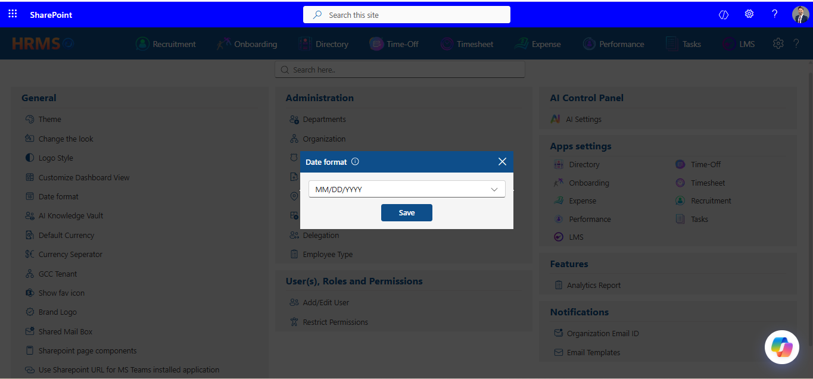
Date format — a tenant-wide setting that propagates correctly to other HCM365 apps.
AI Knowledge Vault
Where Rivo, the built-in assistant, keeps its memory and its FAQ.
AI Knowledge Vault has two tabs. Conversations is a read-only, searchable log of every question asked of Rivo across the tenant and the answer it gave — genuinely useful for spotting where the assistant is confidently wrong (an “error has occurred” response, or a “no data found” for a question that should have data) as opposed to a training gap. Query Library is where admins build a curated set of question-and-answer pairs to expand what Rivo can answer confidently.
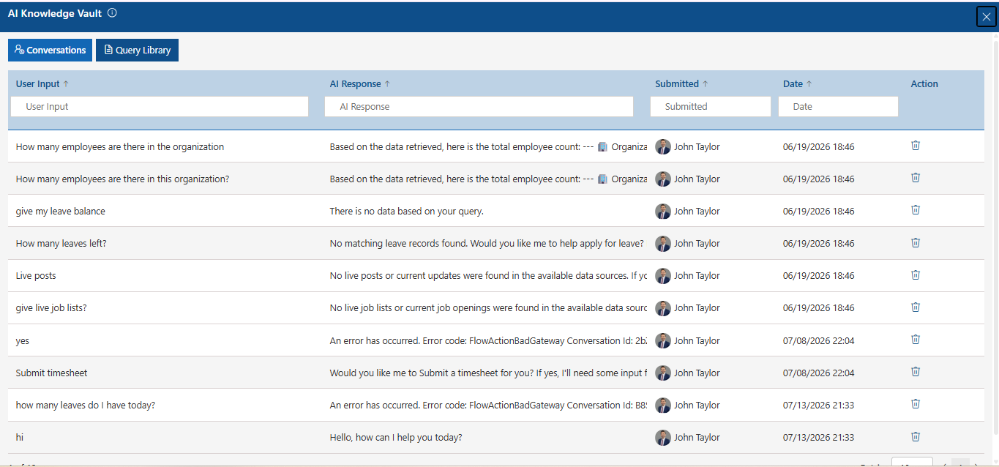
Conversations — every question Rivo has fielded, with its response, submitter, and timestamp.
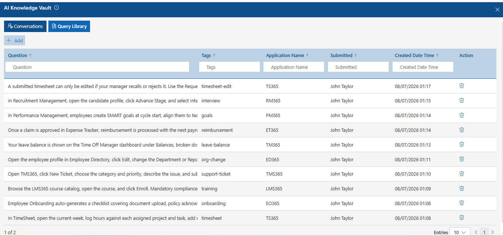
Query Library — admin-curated Q&A pairs, tagged and attributed to a source application.
Default Currency
The tenant's baseline currency — in theory, everywhere finance-related.
A dropdown of standard currency codes (USD, EUR, and so on) intended to set the default currency used across financial fields tenant-wide.
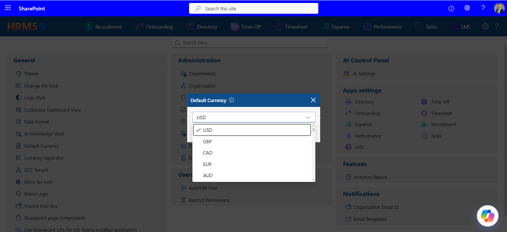
Default Currency — currently set to USD in this tenant.
Currency Seperator
How large numbers should be grouped — No separator, India, or International.
Three mutually exclusive options controlling thousands-grouping style for monetary values (e.g. 1,234,567 vs 12,34,567 vs unformatted).
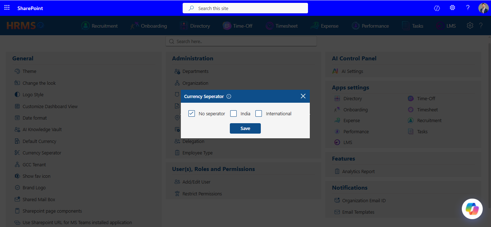
Currency Seperator — No seperator is the current default.
Brand Logo
Your company's mark, top and center in the navigation bar.
Upload a logo (recommended 150×60px, transparent or white background) to replace the default branding across the top navigation bar. The panel includes a crop step after upload and a Remove option (with a confirmation prompt) if you want to revert to the default.
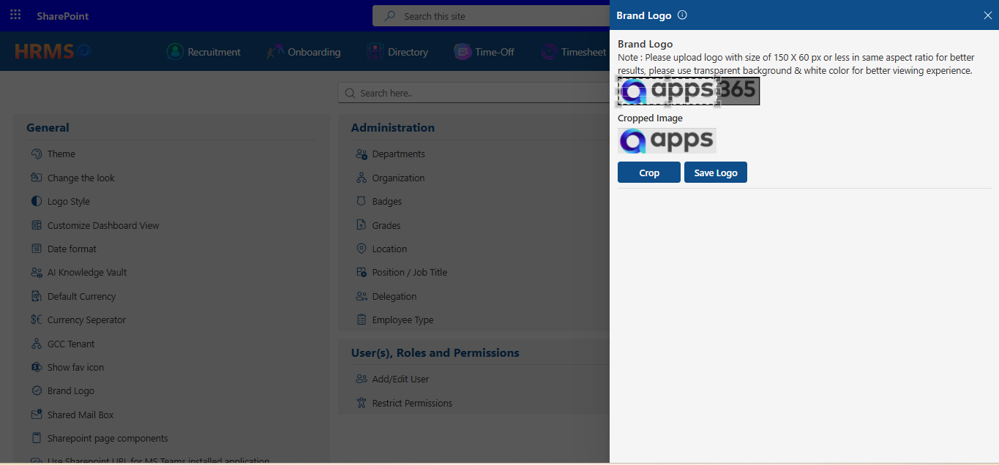
Brand Logo — an empty state, ready for an Upload Logo action.
Shared Mail Box
A shared inbox for system notifications
If the Power Automate flow is configured in your HR365-HRMS application with your shared mailbox ID, you will be able to send all the emails through Power Automate. To know more about Power Automate configuration, please click here. Once configured please click on validate to complete the setup.
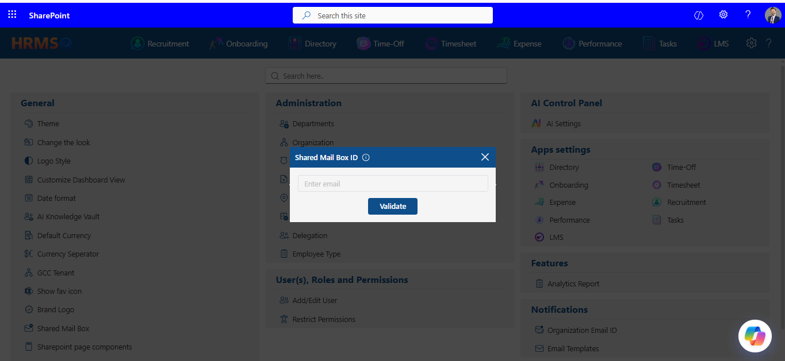
Sharepoint Page Components
Nine toggles that decide how much of SharePoint's own chrome shows through.
HR365-HRMS runs embedded inside a SharePoint page, and these nine toggles control how much of the underlying SharePoint interface — the top site header, the command bar, the side navigation, webpart titles, comments — is hidden so that HR365-HRMS can present as a clean, full-page application instead of a webpart bolted onto a SharePoint site.
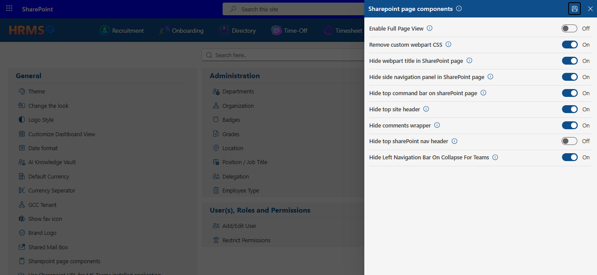
Sharepoint page components — all nine toggles On, which is this tenant's current (and recommended) full-page configuration.
Use Sharepoint URL for MS Teams Installed Application
Point the Teams-installed HR365-HRMS tab at your SharePoint page instead of a standalone app URL.
When enabled, this setting reveals a required “SharePoint URL” field — the address HR365-HRMS should load when opened as a tab inside Microsoft Teams. Off by default.
Enable the“Use SharePoint URL for MS Teams installed application” toggle, then enter your SharePoint site URL in the following format: https://yourtenantname.sharepoint.com/sites/SiteName/SitePages/PageName.aspx After entering the URL, click theSave button to apply your changes.
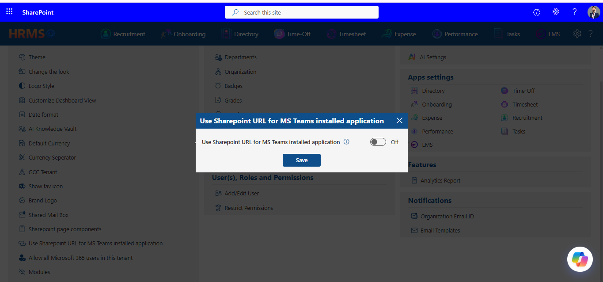
Use Sharepoint URL for MS Teams installed application — off by default; the URL field appears once enabled.
Allow All Microsoft 365 Users in This Tenant
This one is exactly as consequential as it sounds, and its tooltip says so plainly: disabled, only users explicitly added via Add/Edit User can access the application; enabled, every user in the Microsoft 365 tenant can reach it directly from the URL.
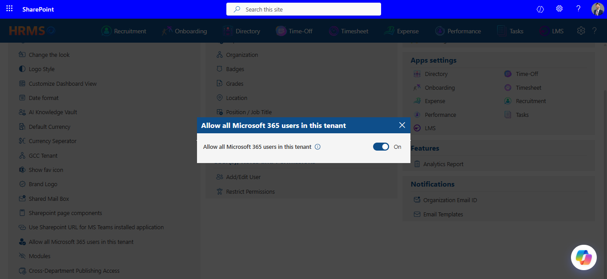
Allow all Microsoft 365 users in this tenant — on by default in this tenant.
Modules
Rename, hide, or reorder any app in the top navigation — with a live drag handle.
Modules is the control panel for the top navigation bar itself. Each row pairs a fixed system name (“Recruitment Management”) with an editable display label (“Recruitment”), an On/Off visibility toggle, and a drag handle for reordering.
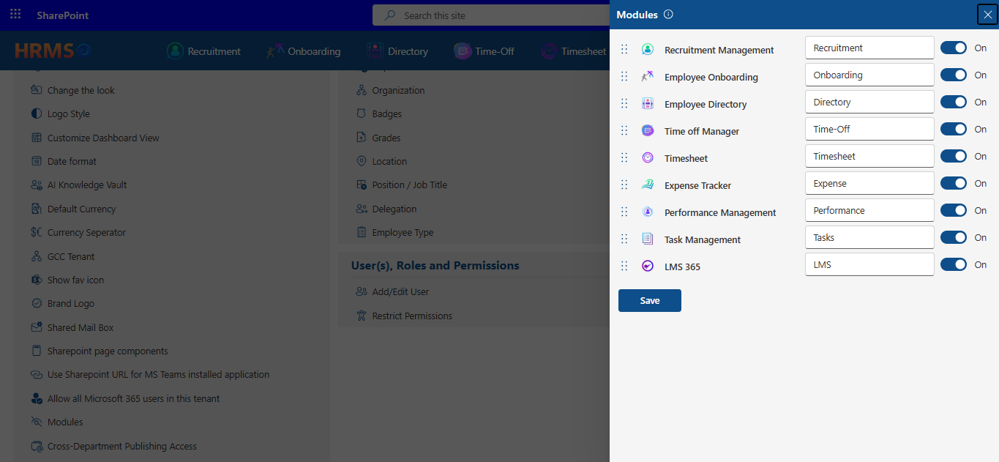
Modules — rename, toggle, and reorder every app tile from one panel.
Cross-Department Publishing Access
Two toggles deciding who can post company-wide announcements.
A pair of toggles — one for Managers, one for regular Users — each controlling whether that role can create Announcements and Polls that reach departments other than their own.
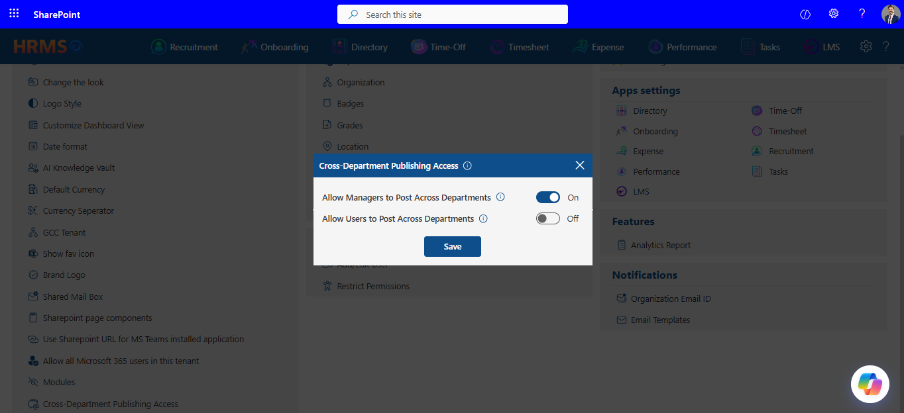
Cross-Department Publishing Access — Managers can post across departments by default; Users cannot.
Pending Update Validation Notifications
An email nudge so app updates awaiting validation don't get forgotten.
A single toggle: when on, admins receive an email notification whenever an application update requires validation and hasn't yet been completed.
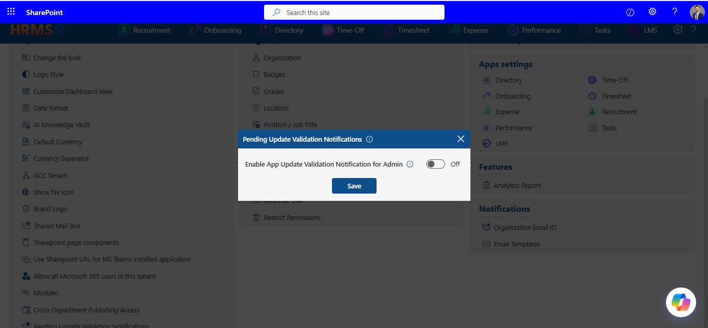
Pending Update Validation Notifications — off by default.